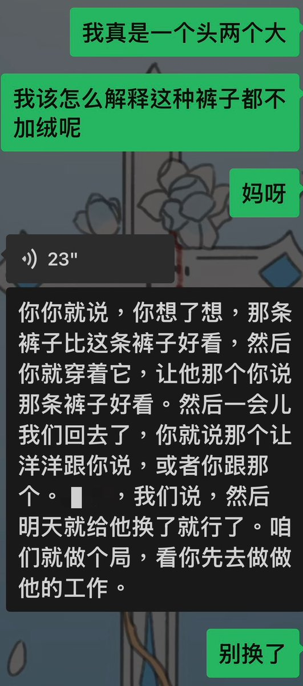
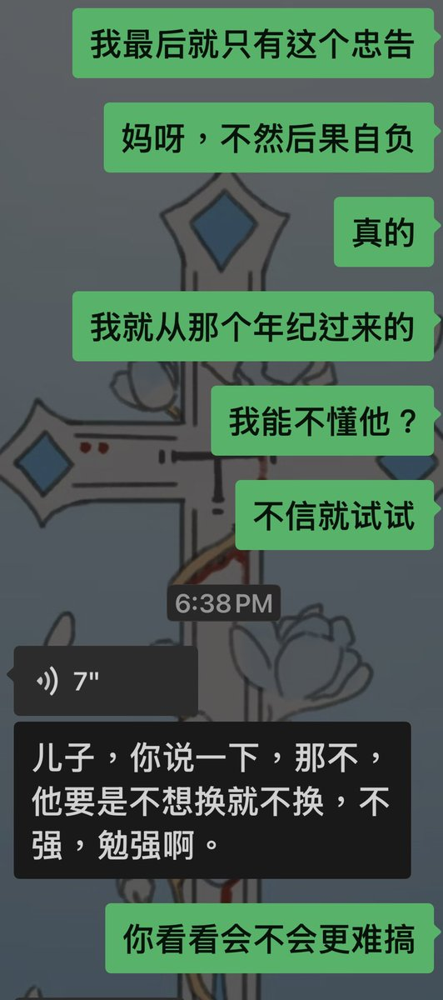
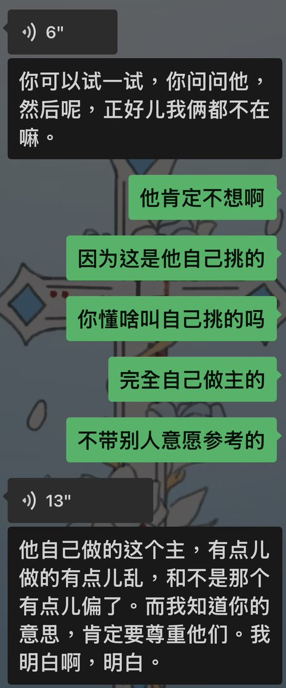
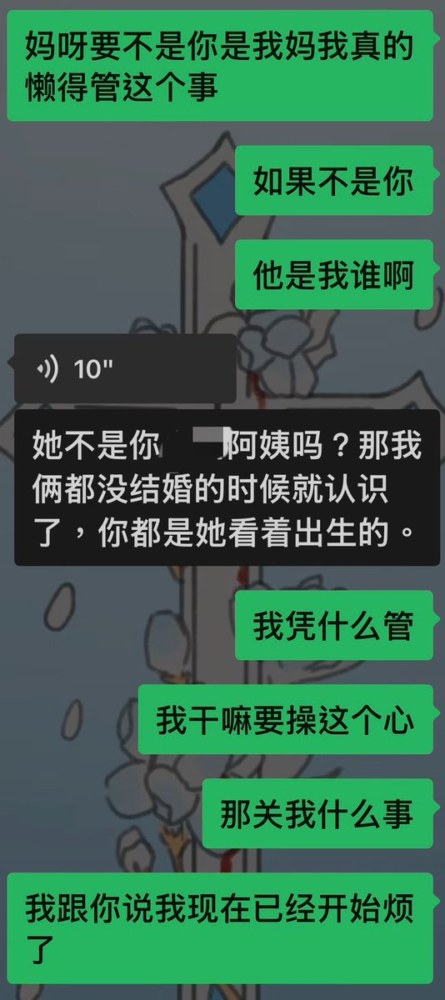
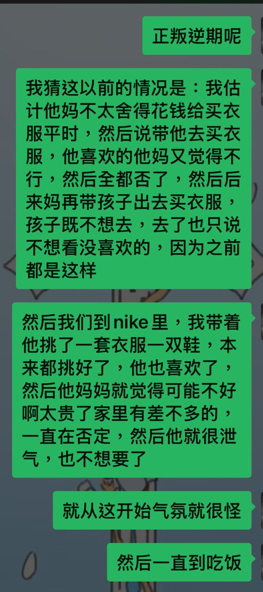
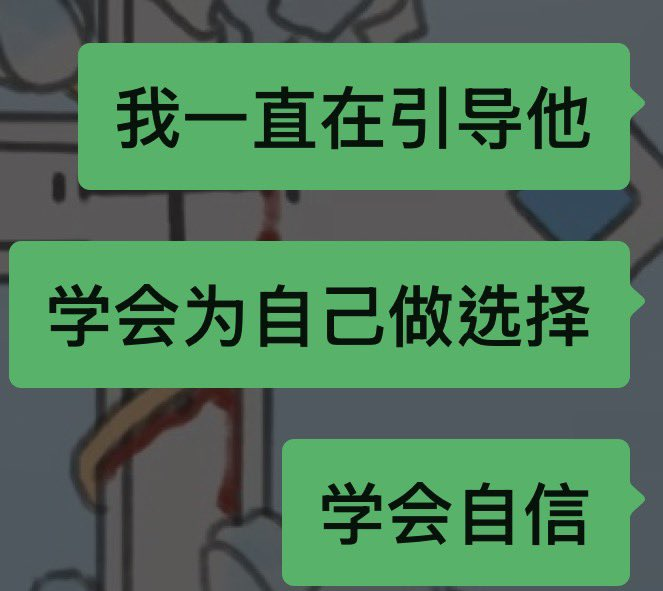

luv.
@3LifeStrongWine
就好像是我已经在物理卷子上写了最佳答案但是一个不懂物理的人非要给我瞎涂改，然后我又要重来一遍，就这样还是觉得裤子选的不满意要换，真的以后别给我找这种事干了，我也就是跟我妈有耐心。






luv.
@3LifeStrongWine
哈哈哈哈带了一天我妈闺蜜孩子买衣服我只能说中式教育pua你赢了，我费劲白咧教15岁青春期的孩子大方自信地为自己做选择，结果还是不如人家亲妈一句不。 https://t.co/XfO9w10DDk